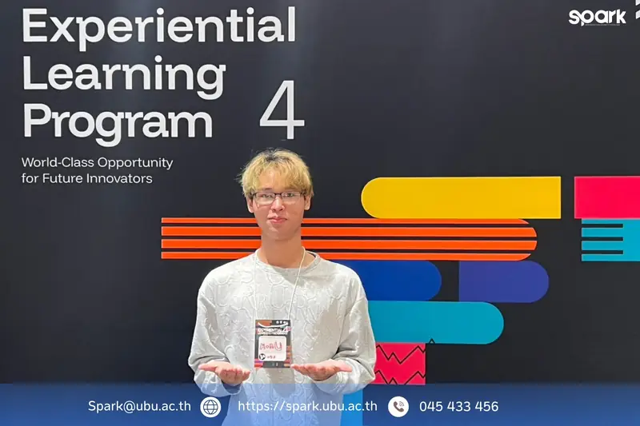

Faceliora joins ELP Season 4: preparing for an exchange in South Korea
A new step for Faceliora: Natthaphat Chanthasen (Manu), a Business Management student in the Faculty of Management Science at Ubon Ratchathani University, has been selected for Experiential Learning Program Season 4 with Faceliora – Pre-consultation for Aesthetic Procedure.

One of 25 representatives from Thailand
The university’s Science and Innovation Park announcement names Manu and Atthaka Wichai (Sai) as the two selected students from Ubon Ratchathani University. The programme selected 25 representatives from more than 240 applicants across 16 Thai universities.
South Korea exchange scheduled for 10–25 October 2026
Manu’s learning exchange in South Korea is scheduled for 10–25 October 2026. The programme focuses on entrepreneurship and innovation skills, with opportunities to learn in an international setting.
This news records the selection and upcoming schedule. Experiences from the exchange will be shared after the activities take place.
Faceliora: preparation before a consultation
The announcement identifies the innovation as Faceliora – Pre-consultation for Aesthetic Procedure. It connects with Faceliora’s focus on helping people prepare their perspectives and questions before an aesthetic consultation.
Selection offers an opportunity for learning and team development. Faceliora Clinic and Faceliora Web retain their distinct product scopes, explained on the product pages.
News and image sources
Based on the Ubon Ratchathani University Science and Innovation Park announcement and event images.
Event photos


From the Faceliora team
Faceliora makes Faceliora Clinic, 3D facial simulation software for aesthetic clinics, to support clinician-led consultations.
Meet the Faceliora team